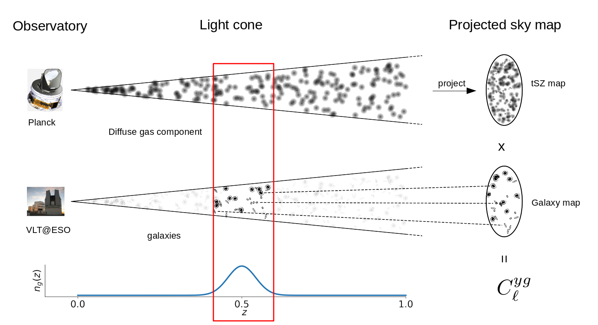

About
My name is Ziang Yan (how to pronounce it? ), a postdoctoral fellow at the German Centre for Cosmological Lensing based at Ruhr-Universität Bochum. Before joining GCCL, I was a PhD student in physics at Department of Physics and Astronomy, University of British Columbia.
I'm a member in the Kilo-degree Survey, Canada-France Imaging Survey, and Dark Energy Science Collaboration.
My research interests include probing the Universe with data from large-scale structure surveys, developing software to measure and calibrate galaxy redshift for weak lensing survey, and applying machine learning into cosmology.
My CV: Resume
Contact me:
Email: yanza21 at astro.ruhr-uni-bochum.de
Office: GAFO 03 / 925
My Research
Overview
I'm interested in cross-analyzing data from different "tracers"(galaxy number density, shear, tSZ, X-ray, CIB, CMB lensing, etc) of the large-scale structure to understand different physical processes happening on different scales. In addition, I'm developing methods and software needed for observational cosmology, including tools for eliminating bias in LSS measurements induced by survey non-uniformity (see this repo for the "tiaogeng" package that I developed) and for calibrating redshift distributions of ensembles of galaxies for weak lensing cosmology (I'm actively involved in contributing to the Redshift Assessment Infrastructure Layers for DESC).
Probing galaxy-scale physics with tomographic cross-correlations

We measure tomographic cross-correlations between galaxy overdensity maps and the foreground maps from Planck to study the galaxy-scale physics. We have studied the thermal history of the Universe with galaxy-tSZ cross-correlations (see our paper 2102.07701 for more detail.) and cosmic star formation history, interstellar dust and galaxy abundance with galaxy- cosmic infrared background cross-correlations (see the papers 2204.01649 and 2310.10848 for more detail.) into unprecedented high redshift (z~1.5). These works show that tomographic cross-correlation between galaxy and LSS tracers can shed light on different galaxy-scale physics.
An estimation of galaxy cluster mass with deep learning

We train a set of convolutional neural networks (CNN) to measure galaxy cluster mass from simulated galaxy cluster images. The galaxy clusters are from the BAHAMAS simulation. Our pre-trained CNN's are capable of making precise mass predictions with mean mass biases of around 1% with scatters of around 17%, which is better than traditional methods. Our work shows the great potential of deep learning algorithms in studying galaxy clusters. We also highlight the importance of interpreting the neural network. (see this paper for more detail.)
Probing the mis-centering effect of galaxy clusters

To handle the mis-centred density profile of galaxy clusters, one needs to know the probability distribution function(PDF) of the offset of the mis-centred centroid. In this work, we apply simulated galaxy clusters from BAHAMAS simulation and study the PDF of offsets of 7 observation-motivated galaxy cluster centroids. Our best-fit PDFs can be used in real observations. We have also studied the mass dependence of mean offset and mass bias estimated from off-centered cluster density profiles. (see this paper for more detail.)
Cosmology for general public
In Chinese, 'the Universe' is called 'Yu Zhou (宇宙)'. As an ancient Chinese philosopher Shi Jiao (390 B.C-330 B.C) put it: "The space surrounding us is called 'Yu(宇)'; the time from the past to the future is called 'Zhou(宙)'. (上下四方曰宇，往古来今曰宙——《尸子》)" This is a perfect definition of "the Universe": all of space and time. Cosmology studies the origin, evolution, and eventual fate of the Universe.
At the beginning of the 20th century, Einstein proposed General Relativity, the geometric theory of spacetime. In 1917, Einstein published “Cosmological Considerations in the General Theory of Relativity.” It is the first scientific paper to study the structure of our Universe. It started an era of physical cosmology. The fundamental theory on how the cosmos evolves was developed before the 1940's and explains the famous discovery by Edwin Hubble: the Universe is expanding. The theory is called the " Big Bang Theory". It describes how the Universe expands from a very high-density and high-temperature state.
In addition to the Hubble expansion, another evidence of the Big Bang Theory is the 'Cosmic Microwave Background (CMB)', which is the afterglow of the Big Bang. It is the earliest light that we can ever see. It contains a tremendous amount of information about the early Universe, as well as serving as the 'seed' of the large-scale structure of the Universe.

(Expanding universe. Image from
here)
The Big Bang cosmology assumes that the Universe is homogeneous and isotropic. However, observations show that the Universe is not that uniform. Galaxies cluster together by gravity to make 'galaxy clusters'; galaxy clusters are connected with 'filaments'; some regions of space are left empty as 'voids': they are called the 'large-scale structure' of the Universe. Studies on the large-scale structure grow up in the latter half of the 20th century. Cosmological surveys provide a large amount of data, and we are learning about the formation and evolution of the large-scale structure from them.
Observations show that the mass of our Universe is made up of ordinary matter by a fraction of less than 40%. The rest are 'dark matter' that does not emit or scatter any light. Moreover, matter (ordinary matter and dark matter) only makes up about 30% of the total density of the Universe, while the rest is mysterious 'dark energy'. The nature of these two dark sectors of our Universe is among the most fundamental questions in modern cosmology. We are trying to answer these questions from the expansion history of the Universe and the evolution of large-scale structure.

(Content of the universe. Image from
here)
Another exciting problem is the 'cosmological inflation', a dramatic acceleration phase of the early Universe (when the universe was 10-36 seconds old). During inflation, the Universe expands by 1026 in 10-32 seconds. Inflation was first proposed to solve some puzzles in the standard model of cosmology, but there is no direct evidence to prove its existence yet. Nor do we understand how it happened.
In addition to what is said above, there are tons of questions in cosmology, which makes it a lively field of modern physics and astronomy. With the improvement of observations, it's hopeful that we will gain essential insight into our Universe in the near future.
More about me
How to pronounce my name?
The last name 'Yan' (IPA: [jɛn˧˥]) is pronounced like the common English name 'Ian'. My first name Ziang (IPA: [t͡sɹ̩˨˩˦ ɑŋ˧˥]) contains essentially TWO syllables 'Zi' and 'ang' lasting an equal amount of time. The initial 'Z-' is like '-ds' in 'kids'. The first syllable sounds like a flying bee 'dzzzz'. The second syllable 'ang' is like the vowel part of English word 'strONG'. So my first name sounds like 'dzzzz-ang'.
Listen to Google Translate for the Chinese pronunciation of my name (note that the family name 'Yan' comes first.).
My Hometown
I was born in Hunan province in the middle-south of China. My hometown is Xinhuang, a beautiful town surrounded by rivers and mountains. We enjoy very spicy food.
(A picture of my hometown. The bridge in the distance is the traditional "Wind and Rain bridge" of my hometown. Image by my dad.
My life outside science
I enjoy classical music from Baroque to late Romantic. I'm interested in entomology, linguistics, and Chinese traditional poems. I play table tennis, and the violin and watch some Japanese anime during my leisure time.
You can find me on Facebook and Twitter. Let's talk about Beethoven, Mahler, and Miyazaki Hayao.